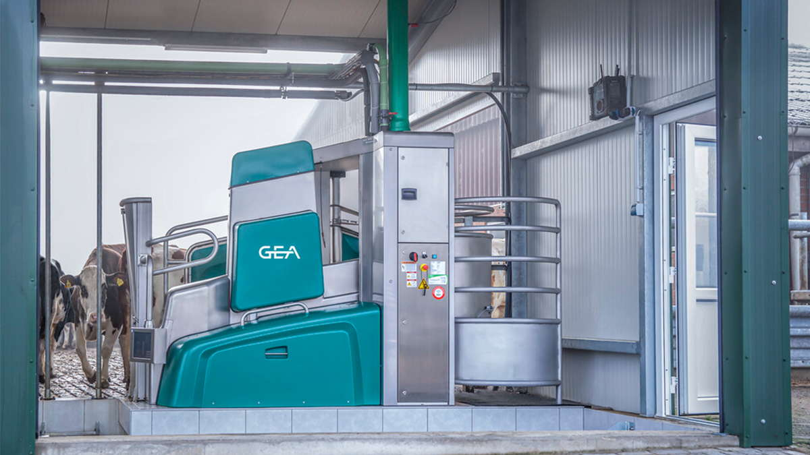
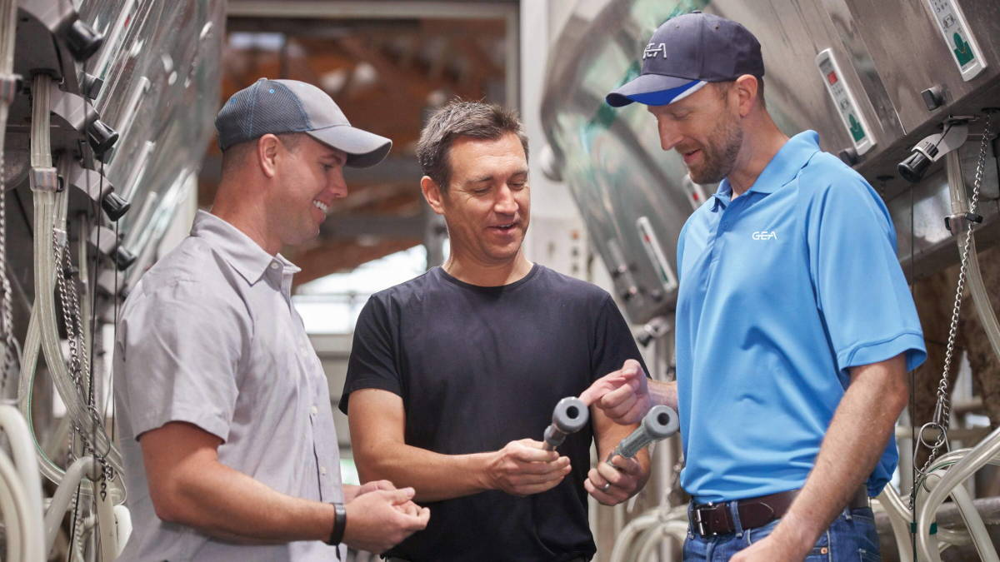
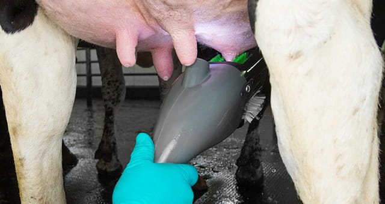
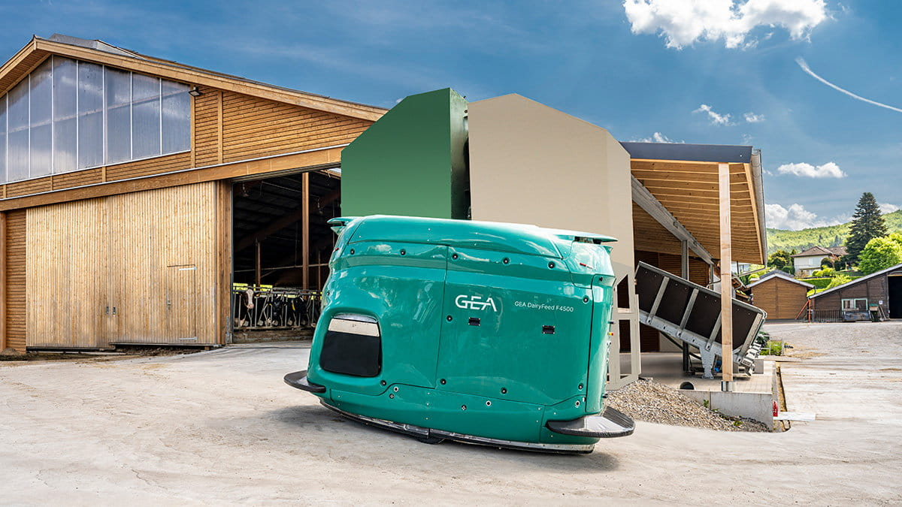
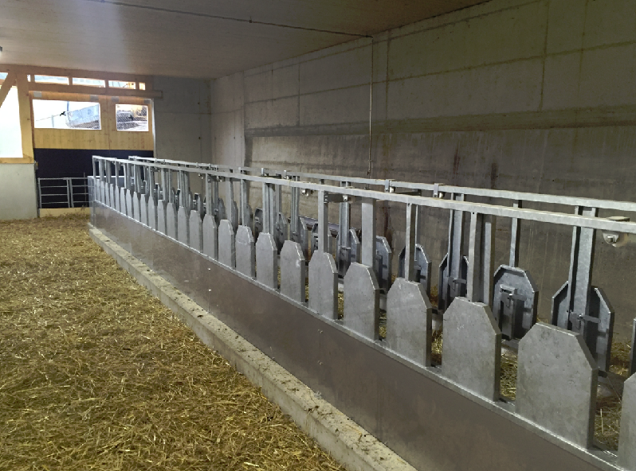

Hochwertige Technik von führenden Herstellern – für einen effizienten und tiergerechten Betrieb.
Modernste Melk- und Fütterungstechnik für Ihren Betrieb – wir beraten, liefern und installieren.

GEADer DairyRobot R9500 wurde für einen optimalen Melkprozess und ein flexibleres Zeitmanagement entwickelt. Grössere Flexibilität, gesteigerte Effizienz und verbesserte Kuhgesundheit – die Kühe entscheiden selbst, wann sie gemolken werden.
Mehr erfahren
GEADie GEA GQ Melkbechergummis kombinieren die Vorteile runder und quadratischer Formen für ein schnelles und schonendes Melken. Das innovative Design sorgt für eine optimale Anpassung an die Zitze und fördert die Eutergesundheit.
Mehr erfahren
GEADas FutureCow Prep System ermöglicht effizientes Waschen, Desinfizieren, Trocknen und Stimulieren der Zitzen in einem einzigen Arbeitsgang. Die mechanische Bürsteneinheit sorgt für verbesserte Hygiene und optimale Euter-Vorbereitung.
Mehr erfahren
GEADer autonom arbeitende Fütterungsroboter wiegt, mischt und verteilt bis zu 2,2 m³ frisches TMR-Futter. Er übernimmt die arbeitsintensive Fütterung rund um die Uhr und sorgt für eine präzise, bedarfsgerechte Versorgung der Herde.
Mehr erfahren
RindlisbacherDas Futterband ermöglicht schnelle und gleichmässige Futterverteilung bei geringem Platzbedarf. Mit anpassbarer Geschwindigkeit, feuerverzinkter Konstruktion und integrierter Fangeinrichtung – modular erweiterbar für jeden Betrieb.
Mehr erfahren